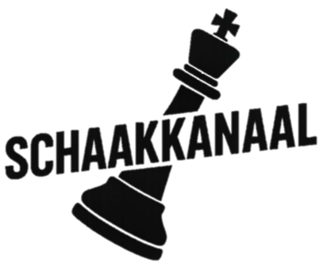

♟️ Deze slogan is nog in ontwikkeling.
Deel jouw idee in Discord en misschien komt die hier te staan.
Een vriendelijke schaakcommunity waar iedereen welkom is. We lachen om onze fouten, vieren onze successen en worden samen beter.
♟️ Tempo is goed.
Van kinderen tot opa's. Van beginners tot ervaren spelers. Schaakkanaal draait om plezier, leren, gezelligheid en een community waar iedereen welkom is.
Er zijn inmiddels meer dan 30 nummers ontstaan binnen de community. Wat begon als een grap groeide uit tot een unieke verzameling muziek gemaakt door en voor leden van Schaakkanaal.
Een van de bekendste uitspraken van Schaakkanaal.
Als kind leerde ik schaken. Zoals bij veel mensen verdween het spel later naar de achtergrond.
Toen corona uitbrak en miljoenen mensen wereldwijd werden gegrepen door The Queen's Gambit, begon ook voor mij een nieuw schaakhoofdstuk.
Door duizenden partijen te spelen groeide mijn rating uiteindelijk naar boven de 2000, met een piek boven de 2100.
Tijdens mijn herstel van een burnout begon ik met YouTube. Wat begon als een klein project groeide uit tot een hobby die volledig uit de hand liep.
Het mooiste aan Schaakkanaal zijn niet de ratings, maar de mensen. We lachen om fouten, vieren successen en helpen elkaar groeien.
Binnenkort vullen we deze pagina met de legendes van Schaakkanaal.
Zaandammer Dimitri Okkerse daagt je uit voor schaakbattles achter het beeldscherm.
Binnenkort verschijnt hier het volledige artikel.
Binnenkort kun je spelen tegen verschillende versies van Dimitri.
Tempo is goed.